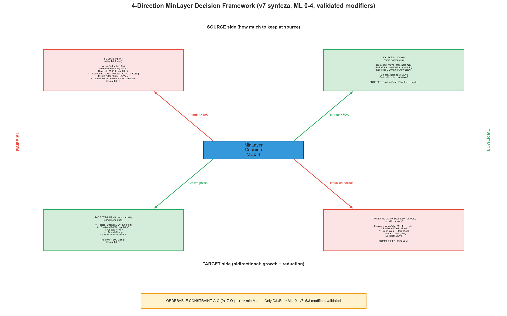
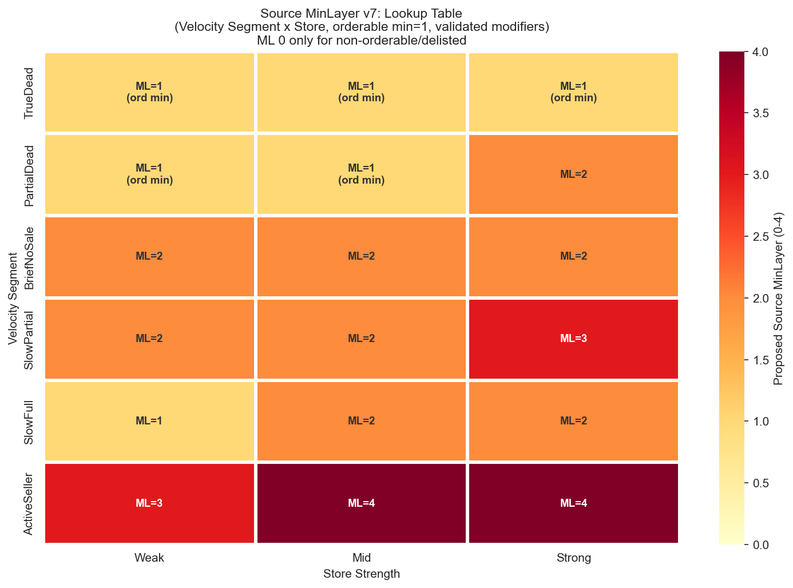
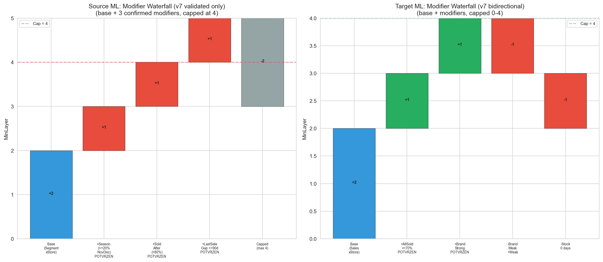
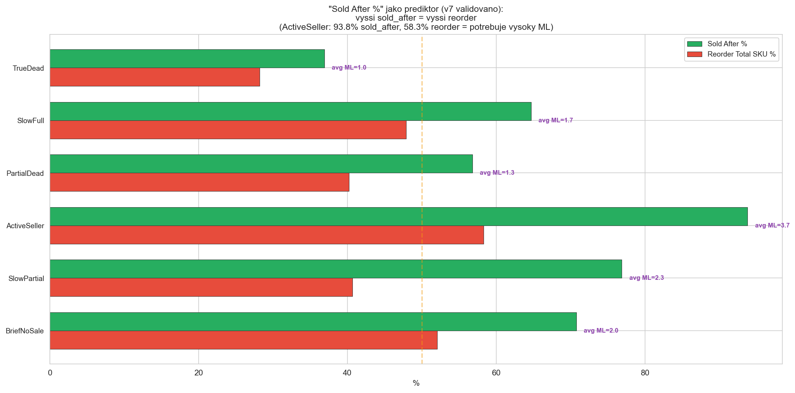
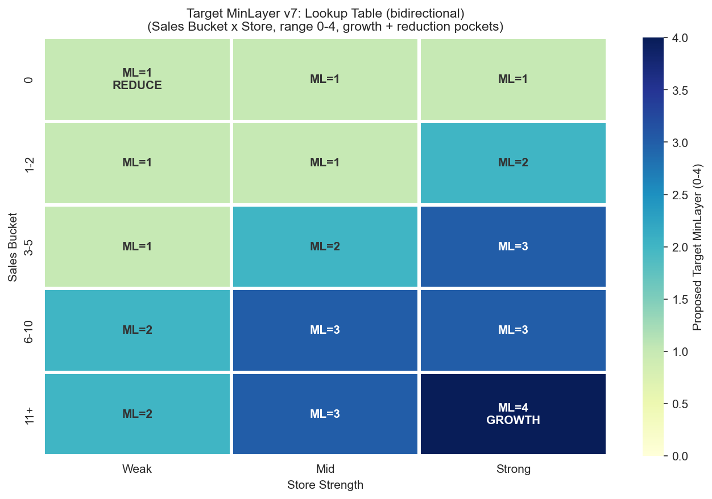

CalculationId=233 | Date: 2025-07-13 | Generated: 2026-03-22 16:39
Pravidla vychazi z Report 1. Strom ma 4 smery: source up, source down, target up (growth), target down (reduction). v7: Velocity segmenty z v6, validovane modifikatory z v5, bidirectional target, ML 0-4.

| Direction | When | Action | Reason |
|---|---|---|---|
| SOURCE UP | Reorder total >40% + Sold After >70% | Ponechat vice na source | Produkty se aktivne prodavaji, v7 validovane modifikatory |
| SOURCE DOWN | Reorder total <30% + Sold After <50% | ML=1 (orderable min) | TrueDead/PartialDead - neprodavaji se, nizky reorder |
| TARGET UP (Growth) | All-sold >70%, 11+ sales | Poslat vice na target (ML=3-4) | v5 bidirectional: growth pockets pro nejlepsi targety |
| TARGET DOWN (Reduction) | Nothing-sold >60%, 0 sales | ML=1 (minimum) | v5 bidirectional: reduction pockets pro nejhorsi targety |

| Segment | Store | Oversell Total % | Reorder Total SKU % | Sold After % | ML | Rec | Dir |
|---|---|---|---|---|---|---|---|
| TrueDead | Weak | 4.3% | 23.7% | 32.6% | 1 (ord min) | CAN LOWER | DOWN |
| TrueDead | Mid | 6.1% | 29.0% | 37.2% | 1 (ord min) | CAN LOWER | DOWN |
| TrueDead | Strong | 8.0% | 31.5% | 40.8% | 1 (ord min) | OK | OK |
| PartialDead | Weak | 9.9% | 36.8% | 48.8% | 1 (ord min) | OK | OK |
| PartialDead | Mid | 14.1% | 41.7% | 57.8% | 1 (ord min) | OK | OK |
| PartialDead | Strong | 17.0% | 40.8% | 62.2% | 2 | OK | OK |
| BriefNoSale | Weak | 27.9% | 52.1% | 70.8% | 2 | MUST RAISE | UP |
| BriefNoSale | Mid | 27.9% | 52.1% | 70.8% | 2 | MUST RAISE | UP |
| BriefNoSale | Strong | 27.9% | 52.1% | 70.8% | 2 | MUST RAISE | UP |
| SlowPartial | Weak | 8.8% | 32.8% | 71.1% | 2 | OK | OK |
| SlowPartial | Mid | 11.7% | 39.3% | 72.6% | 2 | OK | OK |
| SlowPartial | Strong | 15.4% | 46.1% | 84.2% | 3 | OK | OK |
| SlowFull | Weak | 10.2% | 40.6% | 54.9% | 1 | OK | OK |
| SlowFull | Mid | 14.6% | 48.3% | 62.8% | 2 | OK | OK |
| SlowFull | Strong | 18.3% | 51.4% | 72.6% | 2 | MUST RAISE | UP |
| ActiveSeller | Weak | 22.1% | 52.8% | 90.3% | 3 | MUST RAISE | UP |
| ActiveSeller | Mid | 20.9% | 59.8% | 89.0% | 4 | MUST RAISE | UP |
| ActiveSeller | Strong | 21.9% | 58.3% | 96.0% | 4 | MUST RAISE | UP |
| Rule | Condition | ML | Reason |
|---|---|---|---|
| Active orderable | SkuClass = A-O (9) | MIN = 1 | Aktivni zbozi MUSI zustat (min 1 ks) |
| Z orderable | SkuClass = Z-O (11) | MIN = 1 | Z zbozi stale objednatelne |
| Delisted | SkuClass = D(3), L(4), R(5) | = 0 | Delisted = bezpecne vzit vse (v5 POTVRZEN) |
| Modifier | Condition | Adjustment | Evidence + v7 Status |
|---|---|---|---|
| Seasonality | >=20% NovDec | +1 ML | v5 POTVRZEN: OS 2x, RO 1.5x |
| Sold After % | >80% sold_after | +1 ML | NOVY v7: ActiveSeller 93.8% - nejsilnejsi prediktor |
| LastSaleGap | <=90d | +1 ML | v5 POTVRZEN: sold_after 85-90% |
| Stock coverage | <90 days in stock | BriefNoSale rules | BriefNoSale segment (48 SKU) |
| Delisting | SkuClass->D/L | ML=0 | v5 POTVRZEN: override |



| Sales Bucket | Store | All-sold Total % | Nothing-sold 4M % | ML | Direction |
|---|---|---|---|---|---|
| 0 | Weak | 31.4% | 73.7% | 1 | REDUCE |
| 0 | Mid | 37.7% | 73.7% | 1 | REDUCE |
| 0 | Strong | 51.6% | 61.1% | 1 | REDUCE |
| 1-2 | Weak | 38.0% | 65.5% | 1 | REDUCE |
| 1-2 | Mid | 40.9% | 62.0% | 1 | REDUCE |
| 1-2 | Strong | 47.0% | 58.0% | 2 | OK |
| 3-5 | Weak | 54.4% | 45.1% | 1 | OK |
| 3-5 | Mid | 54.6% | 45.5% | 2 | OK |
| 3-5 | Strong | 61.0% | 40.8% | 3 | OK |
| 6-10 | Weak | 74.3% | 28.1% | 2 | GROWTH |
| 6-10 | Mid | 76.2% | 26.8% | 3 | GROWTH |
| 6-10 | Strong | 78.8% | 22.3% | 3 | GROWTH |
| 11+ | Weak | 84.9% | 12.3% | 2 | GROWTH |
| 11+ | Mid | 87.9% | 11.9% | 3 | GROWTH |
| 11+ | Strong | 89.5% | 10.8% | 4 | GROWTH |
| Modifier | Condition | Adjustment | Evidence + v7 Status |
|---|---|---|---|
| Brand-store mismatch | BrandWeak+StoreWeak | -1 ML | POTVRZEN: nothing-sold 54.9% |
| Stock coverage | 0 days (new) target | -1 ML | nothing-sold 52.0%, uncertain |
| Delisting | SkuClass->D/L | ML=0 | v5 POTVRZEN: override |
| All-sold trend | >=70% stores | +1 ML | POTVRZEN: high sell-through signal |
FUNCTION CalculateSourceMinLayer_v7(sku, store):
-- 1. Delisting override [v5 POTVRZEN]
IF sku.SkuClass IN (3, 4, 5): -- D, L, R
RETURN 0
-- 2. Calculate Velocity [v6 base]
velocity = (sku.Sales_12M / sku.DaysInStock_12M) * 30
segment = ClassifyVelocitySegment(velocity, sku.DaysInStock_12M)
-- 3. Base ML from Segment x Store lookup [v6 base]
strength = ClassifyStoreStrength(store.Decile)
base = SOURCE_LOOKUP[segment][strength]
-- 4. ORDERABLE CONSTRAINT
IF sku.SkuClass IN (9, 11): -- A-O or Z-O
base = MAX(base, 1) -- NEVER ML=0
-- 5. Validated modifiers [v7: 3 confirmed + 1 partial]
IF sku.NovDecShare >= 0.20: base += 1 -- v5 POTVRZEN: seasonal
IF sku.SoldAfterPct > 80: base += 1 -- v7 NOVY: strong predictor
IF sku.LastSaleGapDays <= 90: base += 1 -- v5 POTVRZEN: recent activity
-- DROPPED in v7: ProductConc, PhantomStock, Loop4+
RETURN CLAMP(base, 0, 4)
FUNCTION CalculateTargetMinLayer_v7(sku, store):
-- 1. Delisting override [v5 POTVRZEN]
IF sku.SkuClass IN (3, 4, 5):
RETURN 0
-- 2. Base ML from Sales x Store lookup [v6 base + v5 bidirectional]
bucket = ClassifySalesBucket(sku, store)
strength = ClassifyStoreStrength(store.Decile)
base = TARGET_LOOKUP[bucket][strength]
-- NOTE: TARGET_LOOKUP now includes ML=4 for 11+ Strong (v5 bidirectional)
-- 3. Validated modifiers [v7]
IF BrandStoreFit(sku, store) == 'BrandWeak+StoreWeak': base -= 1
IF store.StockCoverageDays == 0: base -= 1 -- new product penalty
IF sku.AllSoldPct >= 70: base += 1 -- growth pocket signal
IF sku.SkuClass IN (3, 4, 5): base = 0 -- delisted
RETURN CLAMP(base, 0, 4)
Generated: 2026-03-22 16:39 | CalculationId=233 | v7 Synteza (v5+v6) | ML 0-4 | Orderable min=1 | Bidirectional target